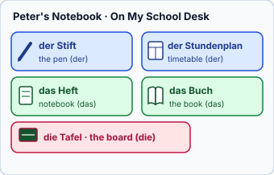
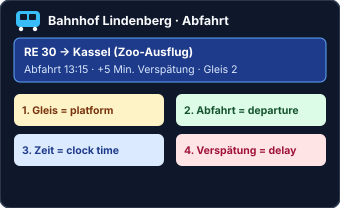
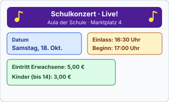

Medienübersicht
Alle Bilder, Audios und Videos dieser App mit ihrer Quelle und ihrer Lizenz.
Bilder

images/station-clock-greetings.svg© CC0-1.0Verwendet auf: Hallo und Tschüss: Erste Begrüßungen

images/du-sie-map.svg© CC0-1.0Verwendet auf: du oder Sie?

images/registration-form.svg© CC0-1.0Verwendet auf: Ein Formular ausfüllen

images/profile-card-steps.svg© CC0-1.0Verwendet auf: Steckbrief: Sich in der Klasse vorstellen

images/number-swap-diagram.svg© CC0-1.0Verwendet auf: Zahlen, Preise und Telefonnummern

images/clock-halb-drei.svg© CC0-1.0Verwendet auf: Uhrzeit, Wochentage und Datum

images/classroom-desk.svg© CC0-1.0Verwendet auf: In der Schule und im Unterricht

images/library-hours-sign.svg© CC0-1.0Verwendet auf: Schilder und Öffnungszeiten lesen

images/platform-board.svg© CC0-1.0Verwendet auf: Kurze Durchsagen verstehen

images/concert-poster.svg© CC0-1.0Verwendet auf: Plakate für Freunde erklären